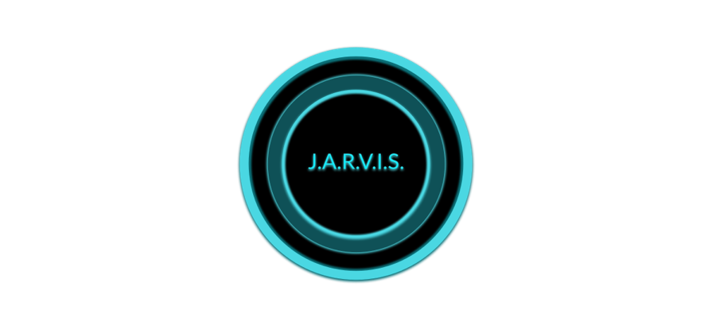
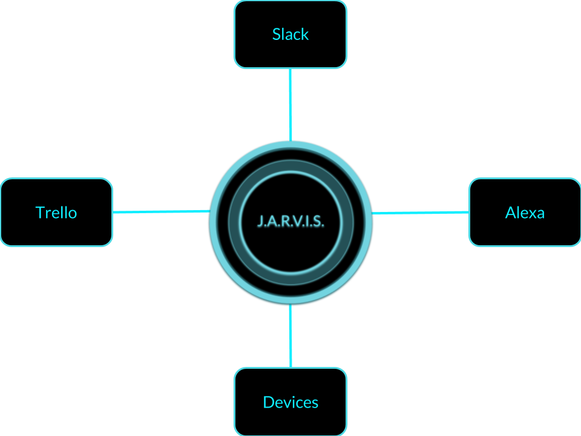
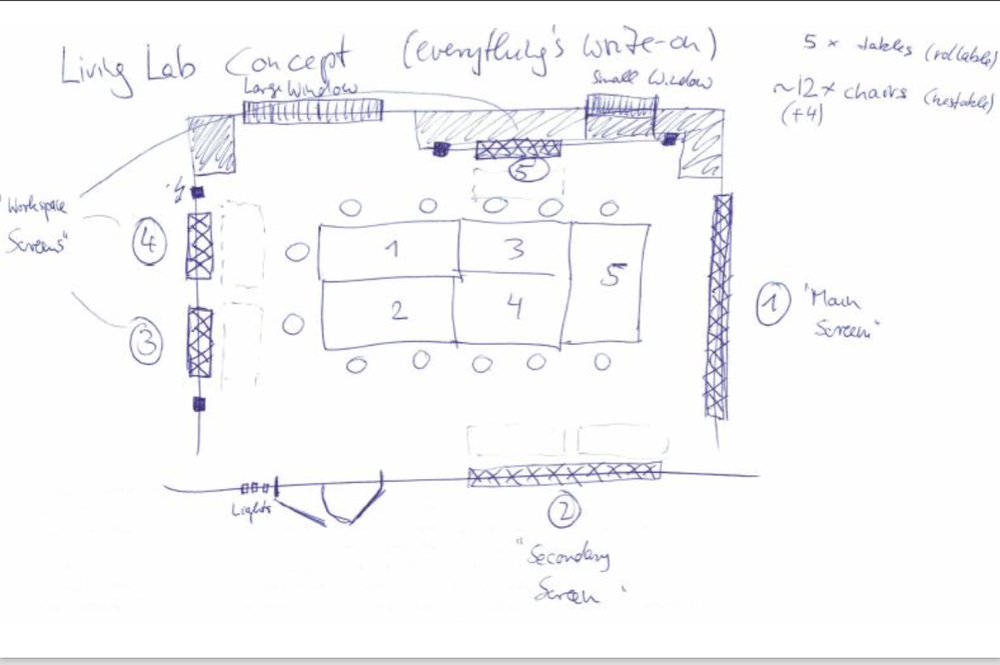
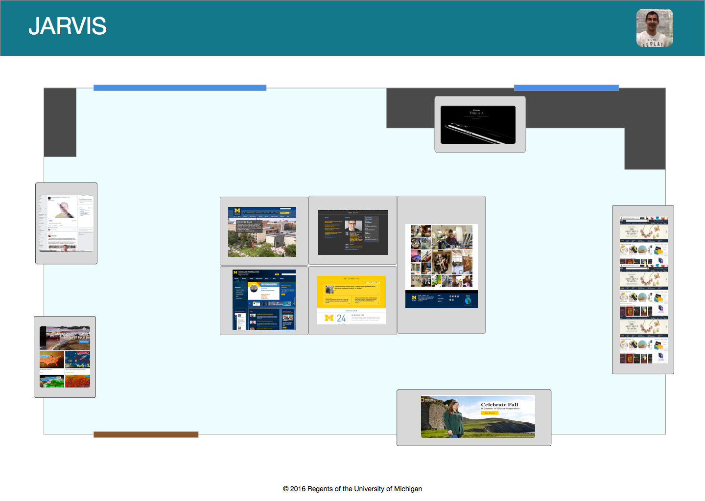
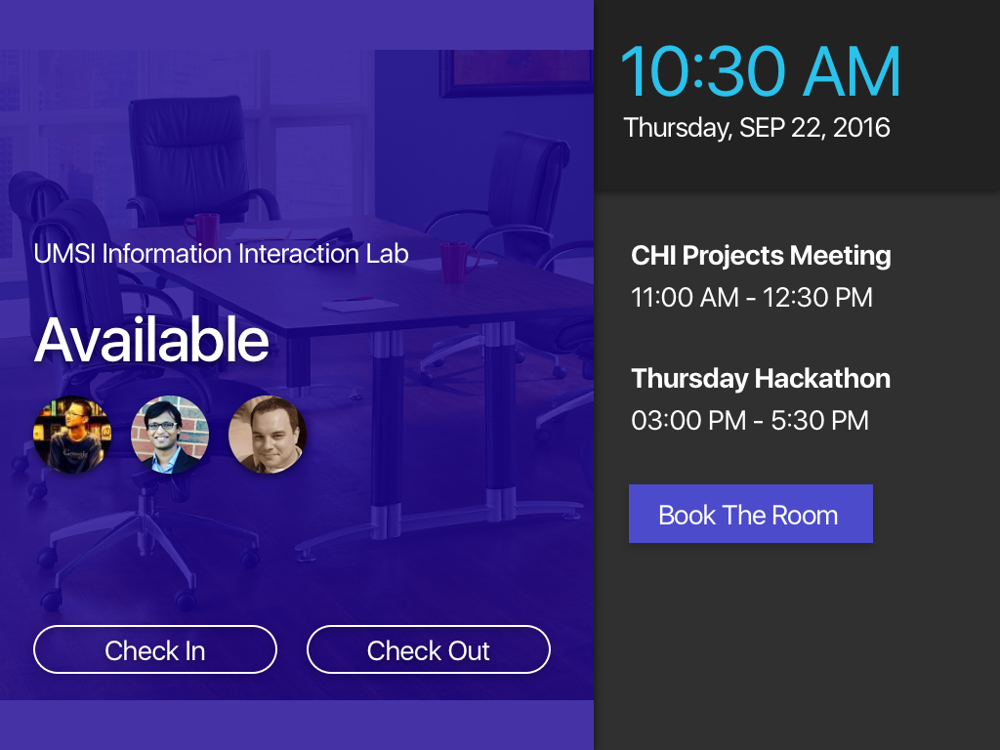

- Date: September 2016 - Present
- Role: UX Designer | Web Developer
- Work Setting: Lab team of 9
As part of my work in the Michigan Information Interaction Lab I am developing a system that allows users to control the devices in the lab and interact with them. We called the project Jarvis, given its resemblance to the character from the Iron Man movies. My role is to design and program the Jarvis Restful API that our various applications are using to control the lab.
Our current integrations are with Slack, Trello, Alexa, and the lab device screens. Slack and Trello are used for team collaboration in our lab. Jarvis can pull information from both platform and display it through one of our apps. Alexa is used as an input source to feed commands to Jarvis as a voice alternative to our web apps.
In order to have Jarvis allow users to control the lab device screens, we designed a brids-eye view interface that allows a lab user to drag and drop the content shown on one device screen to another.
We started with a low-fi paper prototype that represented the lab layout with all the permanently residing devices.
Next, we developed medium-fi prototypes in sketch that illustrated the actual screen a user would see
The final design was finished and the interface were developed. We integrated it into a service we have called XDBrowser, which can control screen content via web sockets. Through the Jarvis interface, a user can drag content from one screen to another, which tells XDBrowser to reflect the changes in the target device.

Another feature of Jarvis is to allow lab members to log in and out of the lab. We developed a user interface for this purpose and hooked it up to the Jarvis Restful API.
We are further expanding Jarvis to give it more control over the lab. One area we are currently exploring is to enable Jarvis to submit crowd-sourcing requests and manage crowd worker tasks.